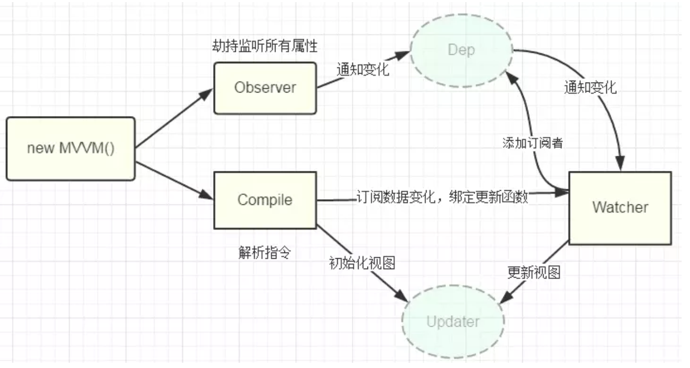

<!DOCTYPE html>
<html lang class="loading">
<head><meta name="generator" content="Hexo 3.9.0">
    <meta charset="UTF-8">
    <meta http-equiv="X-UA-Compatible" content="IE=edge,chrome=1">
    <meta name="viewport" content="width=device-width, minimum-scale=1.0, maximum-scale=1.0, user-scalable=no">
    <title>Vue的MVVM响应式原理 - Hexo</title>
    <meta name="apple-mobile-web-app-capable" content="yes">
    <meta name="apple-mobile-web-app-status-bar-style" content="black-translucent">
    <meta name="google" content="notranslate">
    <meta name="keywords" content="TriDiamond Obsidian,"> 
    <meta name="description" content="
相信只要你去面试vue，都会被问到vue的双向数据绑定，你要是就说个mvvm就是视图模型模型视图，只要数据改变视图也会同时更新！那你离被pass就不远了！

几种实现双向绑定的做法目前几种主流的m,"> 
    <meta name="author" content="小马哥"> 
    <link rel="alternative" href="atom.xml" title="Hexo" type="application/atom+xml"> 
    <link rel="icon" href="/img/favicon.png"> 
    <link href="https://fonts.loli.net/css?family=Roboto+Mono|Rubik&display=swap" rel="stylesheet">
    <link rel="stylesheet" href="//at.alicdn.com/t/font_1429596_nzgqgvnmkjb.css">
    <link rel="stylesheet" href="//cdn.bootcss.com/animate.css/3.7.2/animate.min.css">
    <link rel="stylesheet" href="//cdnjs.cloudflare.com/ajax/libs/social-share.js/1.0.16/css/share.min.css">
    <link rel="stylesheet" href="//cdn.bootcss.com/codemirror/5.48.4/codemirror.min.css">
    <link rel="stylesheet" href="//cdn.bootcss.com/codemirror/5.48.4/theme/dracula.css">
    <link rel="stylesheet" href="/css/obsidian.css">
    <link rel="stylesheet" href="/css/ball-atom.min.css">
</head>
</html>

<body class="loading">
    <div class="loader">
        <div class="la-ball-atom la-2x">
            <div></div>
            <div></div>
            <div></div>
            <div></div>
        </div>
    </div>
    <span id="config-title" style="display:none">Hexo</span>
    <div id="loader"></div>
    <div id="single">
    <div class="scrollbar gradient-bg-rev"></div>
<div id="top" style="display: block;">
    <div class="bar" style="width: 0;"></div>
    <div class="navigation animated fadeIn fast delay-1s">
        
        <div id="play-icon" title="Play/Pause" class="iconfont icon-play"></div>
        <h3 class="subtitle">Vue的MVVM响应式原理</h3>
        <div class="social">
            <!--        <div class="like-icon">-->
            <!--            <a href="javascript:;" class="likeThis active"><span class="icon-like"></span><span class="count">76</span></a>-->
            <!--        </div>-->
            <div>
                <div class="share">
                    
                        <a href="javascript:;" class="iconfont icon-share1"></a>
                        <div class="share-component-cc" data-disabled="facebook,douban,linkedin,diandian,tencent,google"></div>
                    
                </div>
            </div>
        </div>
    </div>
</div>

    <div class="section">
        <div class=article-header-wrapper>
    <div class="article-header">
        <div class="article-cover animated fadeIn" style="
            animation-delay: 600ms;
            animation-duration: 1.2s;
            background-image: 
                radial-gradient(ellipse closest-side, rgba(0, 0, 0, 0.65), #100e17),
                url(/img/cover.jpg) ">
        </div>
        <div class="else">
            <p class="animated fadeInDown">
                
                <a href="/categories/Vue"><b>「
                    </b>VUE<b> 」</b></a>
                
                October 14, 2020
            </p>
            <h3 class="post-title animated fadeInDown"><a href="/2020/10/14/mvvm/" title="Vue的MVVM响应式原理">Vue的MVVM响应式原理</a>
            </h3>
            
            <p class="post-count animated fadeInDown">
                
                <span>
                    <b class="iconfont icon-text2"></b> <i>Words count</i>
                    21k
                </span>
                
                
                <span>
                    <b class="iconfont icon-timer__s"></b> <i>Reading time</i>
                    19 mins.
                </span>
                
                
                
                <span id="busuanzi_container_page_pv">
                    <b class="iconfont icon-read"></b> <i>Read count</i>
                    <span id="busuanzi_value_page_pv">0</span>
                </span>
                
            </p>
            
            
            <ul class="animated fadeInDown post-tags-list"><li class="animated fadeInDown post-tags-list-item"><a class="animated fadeInDown post-tags-list-link" href="/tags/Vue/">Vue</a></li></ul>
            
        </div>
    </div>
</div>

<div class="screen-gradient-after">
    <div class="screen-gradient-content">
        <div class="screen-gradient-content-inside">
            <div class="bold-underline-links screen-gradient-sponsor">
                <p>
                    <span class="animated fadeIn delay-1s"></span>
                </p>
            </div>
        </div>
    </div>
</div>

<div class="article">
    <div class='main'>
        <div class="content markdown animated fadeIn">
            <blockquote>
<p>相信只要你去面试vue，都会被问到vue的双向数据绑定，你要是就说个mvvm就是视图模型模型视图，只要数据改变视图也会同时更新！那你离被pass就不远了！</p>
</blockquote>
<h3 id="几种实现双向绑定的做法"><a href="#几种实现双向绑定的做法" class="headerlink" title="几种实现双向绑定的做法"></a>几种实现双向绑定的做法</h3><p>目前几种主流的mvc(vm)框架都实现了单向数据绑定，而我所理解的双向数据绑定无非就是在单向绑定的基础上给可输入元素（input、textare等）添加了change(input)事件，来动态修改model和 view，并没有多高深。所以无需太过介怀是实现的单向或双向绑定。</p>
<p>实现数据绑定的做法有大致如下几种：</p>
<blockquote>
<p>发布者-订阅者模式（backbone.js）</p>
<p>脏值检查（angular.js）</p>
<p>数据劫持（vue.js）</p>
</blockquote>
<p><strong>发布者-订阅者模式:</strong> 一般通过sub, pub的方式实现数据和视图的绑定监听，更新数据方式通常做法是 <code>vm.set(&#39;property&#39;, value)</code>，这里有篇文章讲的比较详细，有兴趣可点<a href="http://www.html-js.com/article/Study-of-twoway-data-binding-JavaScript-talk-about-JavaScript-every-day" target="_blank" rel="noopener">这里</a></p>
<p>这种方式现在毕竟太low了，我们更希望通过 <code>vm.property = value</code>这种方式更新数据，同时自动更新视图，于是有了下面两种方式</p>
<p><strong>脏值检查:</strong> angular.js 是通过脏值检测的方式比对数据是否有变更，来决定是否更新视图，最简单的方式就是通过 <code>setInterval()</code> 定时轮询检测数据变动，当然Google不会这么low，angular只有在指定的事件触发时进入脏值检测，大致如下：</p>
<ul>
<li>DOM事件，譬如用户输入文本，点击按钮等。( ng-click )</li>
<li>XHR响应事件 ( $http )</li>
<li>浏览器Location变更事件 ( $location )</li>
<li>Timer事件( $timeout , $interval )</li>
<li>执行 $digest() 或 $apply()</li>
</ul>
<p><strong>数据劫持:</strong> vue.js 则是采用数据劫持结合发布者-订阅者模式的方式，通过<code>Object.defineProperty()</code>来劫持各个属性的<code>setter</code>，<code>getter</code>，在数据变动时发布消息给订阅者，触发相应的监听回调。</p>
<h3 id="MVVM原理"><a href="#MVVM原理" class="headerlink" title="MVVM原理"></a>MVVM原理</h3><p>Vue响应式原理最核心的方法便是通过Object.defineProperty()来实现对属性的劫持，达到监听数据变动的目的，无疑这个方法是本文中最重要、最基础的内容之一</p>
<p>整理了一下，要实现mvvm的双向绑定，就必须要实现以下几点：</p>
<ul>
<li>1、实现一个数据监听器Observer，能够对数据对象的所有属性进行监听，如有变动可拿到最新值并通知订阅者</li>
<li>2、实现一个指令解析器Compile，对每个元素节点的指令进行扫描和解析，根据指令模板替换数据，以及绑定相应的更新函数</li>
<li>3、实现一个Watcher，作为连接Observer和Compile的桥梁，能够订阅并收到每个属性变动的通知，执行指令绑定的相应回调函数，从而更新视图</li>
<li>4、mvvm入口函数，整合以上三者</li>
</ul>
<p></p>
<p>先看之前vue的功能</p>
<pre><code class="html">&lt;!DOCTYPE html&gt;
&lt;html lang=&quot;en&quot;&gt;

&lt;head&gt;
    &lt;meta charset=&quot;UTF-8&quot;&gt;
    &lt;meta name=&quot;viewport&quot; content=&quot;width=device-width, initial-scale=1.0&quot;&gt;
    &lt;meta http-equiv=&quot;X-UA-Compatible&quot; content=&quot;ie=edge&quot;&gt;
    &lt;title&gt;Document&lt;/title&gt;
&lt;/head&gt;

&lt;body&gt;
    &lt;div id=&quot;app&quot;&gt;
        &lt;h2&gt;{{obj.name}}--{{obj.age}}&lt;/h2&gt;
        &lt;h2&gt;{{obj.age}}&lt;/h2&gt;
        &lt;h3 v-text=&#39;obj.name&#39;&gt;&lt;/h3&gt;
        &lt;h4 v-text=&#39;msg&#39;&gt;&lt;/h4&gt;
        &lt;ul&gt;
            &lt;li&gt;1&lt;/li&gt;
            &lt;li&gt;2&lt;/li&gt;
            &lt;li&gt;3&lt;/li&gt;
        &lt;/ul&gt;
        &lt;h3&gt;{{msg}}&lt;/h3&gt;
        &lt;div v-html=&#39;htmlStr&#39;&gt;&lt;/div&gt;
        &lt;div v-html=&#39;obj.fav&#39;&gt;&lt;/div&gt;
        &lt;input type=&quot;text&quot; v-model=&#39;msg&#39;&gt;
        &lt;img v-bind:src=&quot;imgSrc&quot; v-bind:alt=&quot;altTitle&quot;&gt;
        &lt;button v-on:click=&#39;handlerClick&#39;&gt;按钮1&lt;/button&gt;
        &lt;button v-on:click=&#39;handlerClick2&#39;&gt;按钮2&lt;/button&gt;
        &lt;button @click=&#39;handlerClick2&#39;&gt;按钮3&lt;/button&gt;
    &lt;/div&gt;
    &lt;script src=&quot;./vue.js&quot;&gt;&lt;/script&gt;
    &lt;script&gt;
        let vm = new MVue({
            el: &#39;#app&#39;,
            data: {
                obj: {
                    name: &#39;小马哥&#39;,
                    age: 19,
                    fav:&#39;&lt;h4&gt;前端Vue&lt;/h4&gt;&#39;
                },
                msg: &#39;MVVM实现原理&#39;,
                htmlStr:&quot;&lt;h3&gt;hello MVVM&lt;/h3&gt;&quot;,
                imgSrc:&#39;https://timgsa.baidu.com/timg?image&amp;quality=80&amp;size=b9999_10000&amp;sec=1568782284688&amp;di=8635d17d550631caabfeb4306b5d76fa&amp;imgtype=0&amp;src=http%3A%2F%2Fh.hiphotos.baidu.com%2Fimage%2Fpic%2Fitem%2Fb3b7d0a20cf431ad7427dfad4136acaf2fdd98a9.jpg&#39;,
                altTitle:&#39;眼睛&#39;,
                isActive:&#39;true&#39;

            },
            methods: {
                handlerClick() {
                    alert(1);
                    console.log(this);

                },
                handlerClick2(){
                    console.log(this);
                    alert(2)
                }
            }

        })
    &lt;/script&gt;
&lt;/body&gt;

&lt;/html&gt;</code></pre>
<h3 id="实现指令解析器Compile"><a href="#实现指令解析器Compile" class="headerlink" title="实现指令解析器Compile"></a>实现指令解析器Compile</h3><p>实现一个指令解析器Compile，对每个元素节点的指令进行扫描和解析，根据指令模板替换数据，以及绑定相应的更新函数,添加监听数据的订阅者，一旦数据有变动，收到通知，更新视图，如图所示：</p>
<h4 id="初始化"><a href="#初始化" class="headerlink" title="初始化"></a>初始化</h4><p>新建MVue.js</p>
<pre><code class="js">class MVue {
    constructor(options) {
        this.$el = options.el;
        this.$data = options.data;
        //保存 options参数,后面处理数据要用到
        this.$options = options;
        // 如果这个根元素存在则开始编译模板
        if (this.$el) {
            // 1.实现一个指令解析器compile
            new Compile(this.$el, this)
        }
    }
}
class Compile{
    constructor(el,vm) {
        // 判断el参数是否是一个元素节点,如果是直接赋值,如果不是 则获取赋值
        this.el = this.isElementNode(el) ? el : document.querySelector(el);
        this.vm = vm;
    }
    isElementNode(node){
        // 判断是否是元素节点
        return node.nodeType === 1
    }
}</code></pre>
<p>这样外界可以这样操作</p>
<pre><code class="js">let vm = new Vue({
    el:&#39;#app&#39;
})
//or
let vm = new Vue({
    el:document.getElementById(&#39;app&#39;)
})</code></pre>
<h4 id="优化编译使用文档碎片"><a href="#优化编译使用文档碎片" class="headerlink" title="优化编译使用文档碎片"></a><strong>优化编译使用文档碎片</strong></h4><pre><code class="html">&lt;h2&gt;{{obj.name}}--{{obj.age}}&lt;/h2&gt;
&lt;h2&gt;{{obj.age}}&lt;/h2&gt;
&lt;h3 v-text=&#39;obj.name&#39;&gt;&lt;/h3&gt;
&lt;h4 v-text=&#39;msg&#39;&gt;&lt;/h4&gt;
&lt;ul&gt;
    &lt;li&gt;1&lt;/li&gt;
    &lt;li&gt;2&lt;/li&gt;
    &lt;li&gt;3&lt;/li&gt;
&lt;/ul&gt;
&lt;h3&gt;{{msg}}&lt;/h3&gt;
&lt;div v-html=&#39;htmlStr&#39;&gt;&lt;/div&gt;
&lt;div v-html=&#39;obj.fav&#39;&gt;&lt;/div&gt;
&lt;input type=&quot;text&quot; v-model=&#39;msg&#39;&gt;
&lt;img v-bind:src=&quot;imgSrc&quot; v-bind:alt=&quot;altTitle&quot;&gt;
&lt;button v-on:click=&#39;handlerClick&#39;&gt;按钮1&lt;/button&gt;
&lt;button v-on:click=&#39;handlerClick2&#39;&gt;按钮2&lt;/button&gt;
&lt;button @click=&#39;handlerClick2&#39;&gt;按钮3&lt;/button&gt;</code></pre>
<blockquote>
<p>接下来,找到子元素的值,比如obj.name,obj.age,obj.fav 找到obj 再找到fav,获取数据中的值替换掉</p>
<p>但是在这里我们不得不想到一个问题,每次找到一个数据替换,都要重新渲染一遍,可能会造成页面的回流和重绘,那么我们最好的办法就是把以上的元素放在内存中,在内存中操作完成之后,再替换掉.</p>
</blockquote>
<pre><code class="js">class Compile {
    constructor(el, vm) {
        // 判断el参数是否是一个元素节点,如果是直接赋值,如果不是 则获取赋值
        this.el = this.isElementNode(el) ? el : document.querySelector(el);
        this.vm = vm;
        // 因为每次匹配到进行替换时,会导致页面的回流和重绘,影响页面的性能
        // 所以需要创建文档碎片来进行缓存,减少页面的回流和重绘
        // 1.获取文档碎片对象
        const fragment = this.node2Fragment(this.el);
        // console.log(fragment);
        // 2.编译模板
        // 3.把子元素的所有内容添加到根元素中
        this.el.appendChild(fragment);

    }
    node2Fragment(el) {
        const fragment = document.createDocumentFragment();
        let firstChild;
        while (firstChild = el.firstChild) {
            fragment.appendChild(firstChild);
        }
        return fragment
    }
    isElementNode(el) {
        return el.nodeType === 1;
    }
}</code></pre>
<p>这时候会发现页面跟之前没有任何变化,但是经过Fragment的处理,优化页面渲染性能</p>
<h4 id="编译模板"><a href="#编译模板" class="headerlink" title="编译模板"></a><strong>编译模板</strong></h4><pre><code class="js">// 编译数据的类
class Compile {
    constructor(el, vm) {
        // 判断el参数是否是一个元素节点,如果是直接赋值,如果不是 则获取赋值
        this.el = this.isElementNode(el) ? el : document.querySelector(el);
        this.vm = vm;
        // 因为每次匹配到进行替换时,会导致页面的回流和重绘,影响页面的性能
        // 所以需要创建文档碎片来进行缓存,减少页面的回流和重绘
        // 1.获取文档碎片对象
        const fragment = this.node2Fragment(this.el);
        // console.log(fragment);
        // 2.编译模板
        this.compile(fragment)

        // 3.把子元素的所有内容添加到根元素中
        this.el.appendChild(fragment);

    }
    compile(fragment) {
        // 1.获取子节点
        const childNodes = fragment.childNodes;
        // 2.遍历子节点
        [...childNodes].forEach(child =&gt; {

            // 3.对子节点的类型进行不同的处理
            if (this.isElementNode(child)) {
                // 是元素节点
                // 编译元素节点
                // console.log(&#39;我是元素节点&#39;,child);
                this.compileElement(child);
            } else {
                // console.log(&#39;我是文本节点&#39;,child);
                this.compileText(child);
                // 剩下的就是文本节点
                // 编译文本节点
            }
            // 4.一定要记得,递归遍历子元素
            if (child.childNodes &amp;&amp; child.childNodes.length) {
                this.compile(child);
            }
        })
    }
    // 编译文本的方法
    compileText(node) {
        console.log(&#39;编译文本&#39;)

    }
    node2Fragment(el) {
        const fragment = document.createDocumentFragment();
        // console.log(el.firstChild);
        let firstChild;
        while (firstChild = el.firstChild) {
            fragment.appendChild(firstChild);
        }
        return fragment
    }
    isElementNode(el) {
        return el.nodeType === 1;
    }
}</code></pre>
<p>接下来根据不同子元素的类型进行渲染</p>
<h4 id="编译元素"><a href="#编译元素" class="headerlink" title="编译元素"></a>编译元素</h4><pre><code class="js">compileElement(node) {
    // 获取该节点的所有属性
    const attributes = node.attributes;
    // 对属性进行遍历
    [...attributes].forEach(attr =&gt; {
        const { name, value } = attr; //v-text v-model   v-on:click  @click 
        // 看当前name是否是一个指令
        if (this.isDirective(name)) {
            //对v-text进行操作
            const [, directive] = name.split(&#39;-&#39;); //text model html
            // v-bind:src
            const [dirName, eventName] = directive.split(&#39;:&#39;); //对v-on:click 进行处理
            // 更新数据
            compileUtil[dirName] &amp;&amp; compileUtil[dirName](node, value, this.vm, eventName);
            // 移除当前元素中的属性
            node.removeAttribute(&#39;v-&#39; + directive);

        }else if(this.isEventName(name)){
            // 对事件进行处理 在这里处理的是@click
            let [,eventName] =  name.split(&#39;@&#39;);
            compileUtil[&#39;on&#39;](node, value, this.vm, eventName)
        }

    })

}
// 是否是@click这样事件名字
isEventName(attrName){
    return attrName.startsWith(&#39;@&#39;)
}
//判断是否是一个指令
isDirective(attrName) {
    return attrName.startsWith(&#39;v-&#39;)
}</code></pre>
<h4 id="编译文本"><a href="#编译文本" class="headerlink" title="编译文本"></a>编译文本</h4><pre><code class="js">// 编译文本的方法
compileText(node) {
    const content = node.textContent;
    // 匹配{{xxx}}的内容
    if (/\{\{(.+?)\}\}/.test(content)) {
        // 处理文本节点
        compileUtil[&#39;text&#39;](node, content, this.vm)
    }

}</code></pre>
<p>大家也会发现,<code>compileUtil</code>这个对象它是什么鬼?真正的编译操作我将它放入到这个对象中,根据不同的指令来做不同的处理.比如v-text是处理文本的 v-html是处理html元素 v-model是处理表单数据的….. </p>
<p>这样我们在当前对象<code>compileUtil</code>中通过updater函数来初始化视图</p>
<h4 id="处理元素-处理文本-处理事件…"><a href="#处理元素-处理文本-处理事件…" class="headerlink" title="处理元素/处理文本/处理事件…."></a><strong>处理元素/处理文本/处理事件….</strong></h4><pre><code class="js">const compileUtil = {
    // 获取值的方法
    getVal(expr, vm) {
        return expr.split(&#39;.&#39;).reduce((data, currentVal) =&gt; {
            return data[currentVal]
        }, vm.$data)
    },
    getAttrs(expr,vm){

    },
    text(node, expr, vm) { //expr 可能是 {{obj.name}}--{{obj.age}} 
        let val;
        if (expr.indexOf(&#39;{{') !== -1) {
            // 
            val = expr.replace(/\{\{(.+?)\}\}/g, (...args) => {
                return this.getVal(args[1], vm);
            })
        }else{ //也可能是v-text='obj.name' v-text='msg'
            val = this.getVal(expr,vm);
        }
        this.updater.textUpdater(node, val);
    },
    html(node, expr, vm) {
        // html处理 非常简单 直接取值 然后调用更新函数即可
        let val = this.getVal(expr,vm);
        this.updater.htmlUpdater(node,val);
    },
    model(node, expr, vm) {
        const val = this.getVal(expr,vm);
        this.updater.modelUpdater(node,val);
    },
    // 对事件进行处理
    on(node, expr, vm, eventName) {
        // 获取事件函数
        let fn = vm.$options.methods && vm.$options.methods[expr];
        // 添加事件 因为我们使用vue时 都不需要关心this的指向问题,这是因为源码的内部帮咱们处理了this的指向
        node.addEventListener(eventName,fn.bind(vm),false);
    },
    // 绑定属性 简单的属性 已经处理 类名样式的绑定有点复杂 因为对应的值可能是对象 也可能是数组 大家根据个人能力尝试写一下
    bind(node,expr,vm,attrName){
        let attrVal = this.getVal(expr,vm);
        this.updater.attrUpdater(node,attrName,attrVal);
    },
    updater: {
        attrUpdater(node, attrName, attrVal){
            node.setAttribute(attrName,attrVal);
        },
        modelUpdater(node,value){
            node.value = value;
        },
        textUpdater(node, value) {

            node.textContent = value;

        },
        htmlUpdater(node,value){
            node.innerHTML = value;
        }
    }

}
```


> 通过以上操作:我们实现了一个编译器compile,用它来解析指令,通过updater初始化视图

### 实现一个数据监听器Observer

ok, 思路已经整理完毕，也已经比较明确相关逻辑和模块功能了，let's do it 我们知道可以利用`Obeject.defineProperty()`来监听属性变动 那么将需要observe的数据对象进行递归遍历，包括子属性对象的属性，都加上 `setter`和`getter` 这样的话，给这个对象的某个值赋值，就会触发`setter`，那么就能监听到了数据变化。。相关代码可以是这样：

```js
//test.js
let data = {name: 'kindeng'};
observe(data);
data.name = 'dmq'; // 哈哈哈，监听到值变化了 kindeng --> dmq

function observe(data) {
    if (!data || typeof data !== 'object') {
        return;
    }
    // 取出所有属性遍历
    Object.keys(data).forEach(function(key) {
        defineReactive(data, key, data[key]);
    });
};

function defineReactive(data, key, val) {
    observe(val); // 监听子属性
    Object.defineProperty(data, key, {
        enumerable: true, // 可枚举
        configurable: false, // 不能再define
        get: function() {
            return val;
        },
        set: function(newVal) {
            console.log('哈哈哈，监听到值变化了 ', val, ' --> ', newVal);
            val = newVal;
        }
    });
}
```

 


再看这张图,我们接下来实现的是一个数据监听器Observer,能够对数据对象的所有属性进行监听，如有变动可拿到最新值通知依赖收集对象(Dep)并通知订阅者(Watcher)来更新视图

```js
// 创建一个数据监听者  劫持并监听所有数据的变化
class Observer{
    constructor(data) {
        this.observe(data);
    }
    observe(data){
        // 如果当前data是一个对象才劫持并监听
        if(data && typeof data === 'object'){
            // 遍历对象的属性做监听
            Object.keys(data).forEach(key=>{
                this.defineReactive(data,key,data[key]);
            })
            
        }
    }
    defineReactive(obj,key,value){
        // 循环递归 对所有层的数据进行观察
        this.observe(value);//这样obj也能被观察了
        Object.defineProperty(obj,key,{
            get(){
                return value;
            },
            set:(newVal)=>{
                if (newVal !== value){
                    // 如果外界直接修改对象 则对新修改的值重新观察
                    this.observe(newVal);
                    value = newVal;
                    // 通知变化
                    dep.notify();
                }
            }
        })
    }
}
```

这样我们已经可以监听每个数据的变化了，那么监听到变化之后就是怎么通知订阅者了，所以接下来我们需要实现一个消息订阅器，很简单，维护一个数组，用来收集订阅者，数据变动触发notify，再调用订阅者的update方法，代码改善之后是这样：

**创建Dep**

- 添加订阅者
- 定义通知的方法

```js
class Dep{
    constructor() {
        this.subs = []
    }
    // 添加订阅者
    addSub(watcher){
        this.subs.push(watcher);
 
    }
    // 通知变化
    notify(){
        // 观察者中有个update方法 来更新视图
        this.subs.forEach(w=>w.update());
    }
}
```

虽然我们已经创建了Observer,Dep(订阅器),那么问题来了，谁是订阅者？怎么往订阅器添加订阅者？

没错，上面的思路整理中我们已经明确订阅者应该是Watcher, 而且`const dep = new Dep();`是在 `defineReactive`方法内部定义的，所以想通过`dep`添加订阅者，就必须要在闭包内操作，所以我们可以在 `getOldVal`里面动手脚：

### 实现一个Watcher

它作为连接Observer和Compile的桥梁，能够订阅并收到每个属性变动的通知，执行指令绑定的相应回调函数，从而更新视图

只要所做事情:

1、在自身实例化时往属性订阅器(dep)里面添加自己 

2、自身必须有一个update()方法 

3、待属性变动dep.notify()通知时，能调用自身的update()方法，并触发Compile中绑定的回调，则功成身退。

```js
//Watcher.js
class Watcher{
    constructor(vm,expr,cb) {
        // 观察新值和旧值的变化,如果有变化 更新视图
        this.vm = vm;
        this.expr = expr;
        this.cb = cb;
        // 先把旧值存起来  
        this.oldVal = this.getOldVal();
    }
    getOldVal(){
        Dep.target = this;
        let oldVal = compileUtil.getVal(this.expr,this.vm);
        Dep.target = null;
        return oldVal;
    }
    update(){
        // 更新操作 数据变化后 Dep会发生通知 告诉观察者更新视图
        let newVal = compileUtil.getVal(this.expr, this.vm);
        if(newVal !== this.oldVal){
            this.cb(newVal);
        }
    }
}

//Observer.js
defineReactive(obj,key,value){
    // 循环递归 对所有层的数据进行观察
    this.observe(value);//这样obj也能被观察了
    const dep = new Dep();
    Object.defineProperty(obj,key,{
        get(){
            //订阅数据变化,往Dep中添加观察者
            Dep.target && dep.addSub(Dep.target);
            return value;
        },
        //....省略
    })
}
```


当我们修改某个数据时,数据已经发生了变化,但是视图没有更新


我们在什么时候来添加绑定watcher呢,继续看图


也就是说,当我们订阅数据变化时,来绑定更新函数,从而让watcher去更新视图

修改

```js
// 编译模板工具类
const compileUtil = {
    // 获取值的方法
    getVal(expr, vm) {
        return expr.split('.').reduce((data, currentVal) => {
            return data[currentVal]
        }, vm.$data)
    },
    //设置值
    setVal(vm,expr,val){
        return expr.split('.').reduce((data, currentVal, index, arr) => {
            return data[currentVal] = val
        }, vm.$data)
    },
    //获取新值 对{{a}}--{{b}} 这种格式进行处理
    getContentVal(expr, vm) {
        return expr.replace(/\{\{(.+?)\}\}/g, (...args) =&gt; {
            return this.getVal(args[1], vm);
        })
    },
    text(node, expr, vm) { //expr 可能是 {{obj.name}}--{{obj.age}} 
        let val;
        if (expr.indexOf(&#39;{{&#39;) !== -1) {
            // 
            val = expr.replace(/\{\{(.+?)\}\}/g, (...args) =&gt; {
                //绑定watcher从而更新视图
                new Watcher(vm,args[1],()=&gt;{           
                    this.updater.textUpdater(node,this.getContentVal(expr, vm));
                })
                return this.getVal(args[1], vm);
            })
        }else{ //也可能是v-text=&#39;obj.name&#39; v-text=&#39;msg&#39;
            val = this.getVal(expr,vm);
        }
        this.updater.textUpdater(node, val);

    },
    html(node, expr, vm) {
        // html处理 非常简单 直接取值 然后调用更新函数即可
        let val = this.getVal(expr,vm);
        // 订阅数据变化时 绑定watcher,从而更新函数
        new Watcher(vm,expr,(newVal)=&gt;{
            this.updater.htmlUpdater(node, newVal);
        })
        this.updater.htmlUpdater(node,val);
    },
    model(node, expr, vm) {
        const val = this.getVal(expr,vm);
        // 订阅数据变化时 绑定更新函数 更新视图的变化

        // 数据==&gt;视图
        new Watcher(vm, expr, (newVal) =&gt; {
            this.updater.modelUpdater(node, newVal);
        })
        // 视图==&gt;数据
        node.addEventListener(&#39;input&#39;,(e)=&gt;{
            // 设置值
            this.setVal(vm,expr,e.target.value);

        },false);
        this.updater.modelUpdater(node,val);
    },
    // 对事件进行处理
    on(node, expr, vm, eventName) {
        // 获取事件函数
        let fn = vm.$options.methods &amp;&amp; vm.$options.methods[expr];
        // 添加事件 因为我们使用vue时 都不需要关心this的指向问题,这是因为源码的内部帮咱们处理了this的指向
        node.addEventListener(eventName,fn.bind(vm),false);
    },
    // 绑定属性 简单的属性 已经处理 类名样式的绑定有点复杂 因为对应的值可能是对象 也可能是数组 大家根据个人能力尝试写一下
    bind(node,expr,vm,attrName){
        let attrVal = this.getVal(expr,vm);
        this.updater.attrUpdater(node,attrName,attrVal);
    },
    updater: {
        attrUpdater(node, attrName, attrVal){
            node.setAttribute(attrName,attrVal);
        },
        modelUpdater(node,value){
            node.value = value;
        },
        textUpdater(node, value) {
            node.textContent = value;
        },
        htmlUpdater(node,value){
            node.innerHTML = value;
        }
    }

}</code></pre>
<h3 id="代理proxy"><a href="#代理proxy" class="headerlink" title="代理proxy"></a>代理proxy</h3><p>我们在使用vue的时候,通常可以直接vm.msg来获取数据,这是因为vue源码内部做了一层代理.也就是说把数据获取操作vm上的取值操作 都代理到vm.$data上</p>
<pre><code class="js">class Vue {
    constructor(options) {
        this.$data = options.data;
        this.$el = options.el;
        this.$options = options
        // 如果这个根元素存在开始编译模板
        if (this.$el) {
            // 1.实现一个数据监听器Observe
            // 能够对数据对象的所有属性进行监听，如有变动可拿到最新值并通知订阅者
            // Object.definerProperty()来定义
            new Observer(this.$data);

            // 把数据获取操作 vm上的取值操作 都代理到vm.$data上
            this.proxyData(this.$data);

            // 2.实现一个指令解析器Compile
            new Compiler(this.$el, this);

        }
    }
    // 做个代理
    proxyData(data){
       for (const key in data) {
          Object.defineProperty(this,key,{
              get(){
                  return data[key];
              },
              set(newVal){
                  data[key] = newVal;
              }
          })
       }
    }
}</code></pre>
<h3 id="面试题"><a href="#面试题" class="headerlink" title="面试题"></a>面试题</h3><p>阐述一下你所理解vue的MVVM响应式原理 </p>
<p>vue.js 则是采用数据劫持结合发布者-订阅者模式的方式，通过<code>Object.defineProperty()</code>来劫持各个属性的<code>setter</code>，<code>getter</code>，在数据变动时发布消息给订阅者，触发相应的监听回调。</p>
<p>MVVM作为数据绑定的入口，整合Observer、Compile和Watcher三者，通过Observer来监听自己的model数据变化，通过Compile来解析编译模板指令，最终利用Watcher搭起Observer和Compile之间的通信桥梁，达到数据变化 -&gt; 视图更新；视图交互变化(input) -&gt; 数据model变更的双向绑定效果</p>
<p>再配合上面的那张图,想不入职都很难</p>
<p></p>

            <!--[if lt IE 9]><script>document.createElement('audio');</script><![endif]-->
            <audio id="audio" loop="1" preload="auto" controls="controls"
                data-autoplay="false">
                <source type="audio/mpeg" src="">
            </audio>
            
            <ul id="audio-list" style="display:none">
                
                
                <li title='0' data-url='/statics/chengdu.mp3'></li>
                
                    
            </ul>
            
            
            
    <div id='gitalk-container' class="comment link"
        data-ae='true'
        data-ci='ec894e2b66f752e8b7fb'
        data-cs='3ccc2e92bb350688fe2c2dc2930189b62622bfb1'
        data-r='blog-comments'
        data-o='TriDiamond'
        data-a='TriDiamond'
        data-d=''
    >Comments</div>


            
            
        </div>
        <div class="sidebar">
            <div class="box animated fadeInRight">
                <div class="subbox">
                    </img>
                    <p>小马哥</p>
                    <span></span>
                    <dl>
                        <dd><a href="https://github.com/TriDiamond" target="_blank"><span
                                    class=" iconfont icon-github"></span></a></dd>
                        <dd><a href="https://twitter.com/TriDiamond6" target="_blank"><span
                                    class=" iconfont icon-twitter"></span></a></dd>
                        <dd><a href="https://stackoverflow.com/users/7602324/tridiamond?tab=profile" target="_blank"><span
                                    class=" iconfont icon-stack-overflow"></span></a></dd>
                    </dl>
                </div>
                <ul>
                    <li><a href="/">2 <p>Articles</p></a></li>
                    <li><a href="/categories">4 <p>Categories</p></a></li>
                    <li><a href="/tags">2 <p>Tags</p></a></li>
                </ul>
            </div>
            
            
            
            <div class="box sticky animated fadeInRight faster">
                <div id="toc" class="subbox">
                    <h4>Contents</h4>
                    <ol class="toc"><li class="toc-item toc-level-3"><a class="toc-link" href="#几种实现双向绑定的做法"><span class="toc-number">1.</span> <span class="toc-text">几种实现双向绑定的做法</span></a></li><li class="toc-item toc-level-3"><a class="toc-link" href="#MVVM原理"><span class="toc-number">2.</span> <span class="toc-text">MVVM原理</span></a></li><li class="toc-item toc-level-3"><a class="toc-link" href="#实现指令解析器Compile"><span class="toc-number">3.</span> <span class="toc-text">实现指令解析器Compile</span></a></li><li class="toc-item toc-level-3"><a class="toc-link" href="#代理proxy"><span class="toc-number">4.</span> <span class="toc-text">代理proxy</span></a></li><li class="toc-item toc-level-3"><a class="toc-link" href="#面试题"><span class="toc-number">5.</span> <span class="toc-text">面试题</span></a></li></ol>
                </div>
            </div>
            
            
        </div>
    </div>
</div>

    </div>
</div>
    <div id="back-to-top" class="animated fadeIn faster">
        <div class="flow"></div>
        <span class="percentage animated fadeIn faster">0%</span>
        <span class="iconfont icon-top02 animated fadeIn faster"></span>
    </div>
</body>
<footer>
    <p class="copyright" id="copyright">
        &copy; 2020
        <span class="gradient-text">
            小马哥
        </span>.
        Theme
        <span class="gradient-text">
            <a href="https://github.com/TriDiamond/hexo-theme-obsidian" title="Obsidian" target="_blank" rel="noopener">Obsidian</a>
        </span>
        <small><a href="https://github.com/TriDiamond/hexo-theme-obsidian/blob/master/CHANGELOG.md" title="v1.4.4" target="_blank" rel="noopener">v1.4.4</a></small>
    </p>
</footer>

<script type="text/javascript" src="https://cdn.bootcss.com/mathjax/2.7.6/MathJax.js?config=TeX-AMS-MML_HTMLorMML">
</script>
<script>
  MathJax.Hub.Config({
    "HTML-CSS": {
      preferredFont: "TeX",
      availableFonts: ["STIX", "TeX"],
      linebreaks: {
        automatic: true
      },
      EqnChunk: (MathJax.Hub.Browser.isMobile ? 10 : 50)
    },
    tex2jax: {
      inlineMath: [
        ["$", "$"],
        ["\\(", "\\)"]
      ],
      processEscapes: true,
      ignoreClass: "tex2jax_ignore|dno",
      skipTags: ['script', 'noscript', 'style', 'textarea', 'pre', 'code']
    },
    TeX: {
      noUndefined: {
        attributes: {
          mathcolor: "red",
          mathbackground: "#FFEEEE",
          mathsize: "90%"
        }
      },
      Macros: {
        href: "{}"
      }
    },
    messageStyle: "none"
  });
</script>
<script>
  function initialMathJax() {
    MathJax.Hub.Queue(function () {
      var all = MathJax.Hub.getAllJax(),
        i;
      // console.log(all);
      for (i = 0; i < all.length; i += 1) {
        console.log(all[i].SourceElement().parentNode)
        all[i].SourceElement().parentNode.className += ' has-jax';
      }
    });
  }

  function reprocessMathJax() {
    if (typeof MathJax !== 'undefined') {
      MathJax.Hub.Queue(["Typeset", MathJax.Hub]);
    }
  }
</script>


 <link rel="stylesheet" href="//cdn.bootcss.com/gitalk/1.5.0/gitalk.min.css"> <script src="//cdn.bootcss.com/gitalk/1.5.0/gitalk.min.js"></script>  <script src="//cdnjs.cloudflare.com/ajax/libs/jquery/3.4.1/jquery.min.js"></script>
<script src="/js/plugin.js"></script>
<script src="/js/obsidian.js"></script>
<script src="/js/jquery.truncate.js"></script>
<script src="/js/search.js"></script> <script src="//cdn.bootcss.com/typed.js/2.0.10/typed.min.js"></script> <script src="//cdn.bootcss.com/blueimp-md5/2.12.0/js/md5.min.js"></script> <script src="//cdnjs.cloudflare.com/ajax/libs/social-share.js/1.0.16/js/social-share.min.js"></script>

<script src="https://cdn.bootcss.com/codemirror/5.48.4/codemirror.min.js"></script>
 <script src="//cdn.bootcss.com/codemirror/5.48.4/mode/javascript/javascript.min.js"></script>  <script src="//cdn.bootcss.com/codemirror/5.48.4/mode/css/css.min.js"></script>  <script src="//cdn.bootcss.com/codemirror/5.48.4/mode/xml/xml.min.js"></script>  <script src="//cdn.bootcss.com/codemirror/5.48.4/mode/htmlmixed/htmlmixed.min.js"></script>  <script src="//cdn.bootcss.com/codemirror/5.48.4/mode/clike/clike.min.js"></script>  <script src="//cdn.bootcss.com/codemirror/5.48.4/mode/php/php.min.js"></script>  <script src="//cdn.bootcss.com/codemirror/5.48.4/mode/shell/shell.min.js"></script>  <script src="//cdn.bootcss.com/codemirror/5.48.4/mode/python/python.min.js"></script>   <script src="/js/busuanzi.min.js"></script>
<script>
  $(document).ready(function () {
    if ($('span[id^="busuanzi_"]').length) {
      initialBusuanzi();
    }
  });
</script>
 <link rel="stylesheet" href="//cdn.bootcss.com/photoswipe/4.1.3/photoswipe.min.css">
<link rel="stylesheet" href="//cdn.bootcss.com/photoswipe/4.1.3/default-skin/default-skin.min.css">
<script src="//cdn.bootcss.com/photoswipe/4.1.3/photoswipe.min.js"></script>
<script src="//cdn.bootcss.com/photoswipe/4.1.3/photoswipe-ui-default.min.js"></script>

<!-- Root element of PhotoSwipe. Must have class pswp. -->
<div class="pswp" tabindex="-1" role="dialog" aria-hidden="true">
    <!-- Background of PhotoSwipe. 
         It's a separate element as animating opacity is faster than rgba(). -->
    <div class="pswp__bg"></div>
    <!-- Slides wrapper with overflow:hidden. -->
    <div class="pswp__scroll-wrap">
        <!-- Container that holds slides. 
            PhotoSwipe keeps only 3 of them in the DOM to save memory.
            Don't modify these 3 pswp__item elements, data is added later on. -->
        <div class="pswp__container">
            <div class="pswp__item"></div>
            <div class="pswp__item"></div>
            <div class="pswp__item"></div>
        </div>
        <!-- Default (PhotoSwipeUI_Default) interface on top of sliding area. Can be changed. -->
        <div class="pswp__ui pswp__ui--hidden">
            <div class="pswp__top-bar">
                <!--  Controls are self-explanatory. Order can be changed. -->
                <div class="pswp__counter"></div>
                <button class="pswp__button pswp__button--close" title="Close (Esc)"></button>
                <button class="pswp__button pswp__button--share" title="Share"></button>
                <button class="pswp__button pswp__button--fs" title="Toggle fullscreen"></button>
                <button class="pswp__button pswp__button--zoom" title="Zoom in/out"></button>
                <!-- Preloader demo http://codepen.io/dimsemenov/pen/yyBWoR -->
                <!-- element will get class pswp__preloader--active when preloader is running -->
                <div class="pswp__preloader">
                    <div class="pswp__preloader__icn">
                      <div class="pswp__preloader__cut">
                        <div class="pswp__preloader__donut"></div>
                      </div>
                    </div>
                </div>
            </div>
            <div class="pswp__share-modal pswp__share-modal--hidden pswp__single-tap">
                <div class="pswp__share-tooltip"></div> 
            </div>
            <button class="pswp__button pswp__button--arrow--left" title="Previous (arrow left)">
            </button>
            <button class="pswp__button pswp__button--arrow--right" title="Next (arrow right)">
            </button>
            <div class="pswp__caption">
                <div class="pswp__caption__center"></div>
            </div>
        </div>
    </div>
</div>
 
<!-- Global site tag (gtag.js) - Google Analytics -->
<script async src="//www.googletagmanager.com/gtag/js?id=UA-149874671-1"></script>
<script>
  window.dataLayer = window.dataLayer || [];
  function gtag() {
    dataLayer.push(arguments);
  }
  gtag('js', new Date());

  gtag('config', 'UA-149874671-1');
</script>
 

<script>
  function initialTyped() {
    var typedTextEl = $('.typed-text');
    if (typedTextEl && typedTextEl.length > 0) {
      var typed = new Typed('.typed-text', {
        strings: ['', '不要在最好的年纪选择安逸，前端的世界如此精彩，要多去尝试，努力，奋斗！！'],
        typeSpeed: 90,
        loop: true,
        loopCount: Infinity,
        backSpeed: 20,
      });
    }
  }

  if ($('.article-header') && $('.article-header').length) {
    $(document).ready(function () {
      initialTyped();
    });
  }
</script>


</html>
